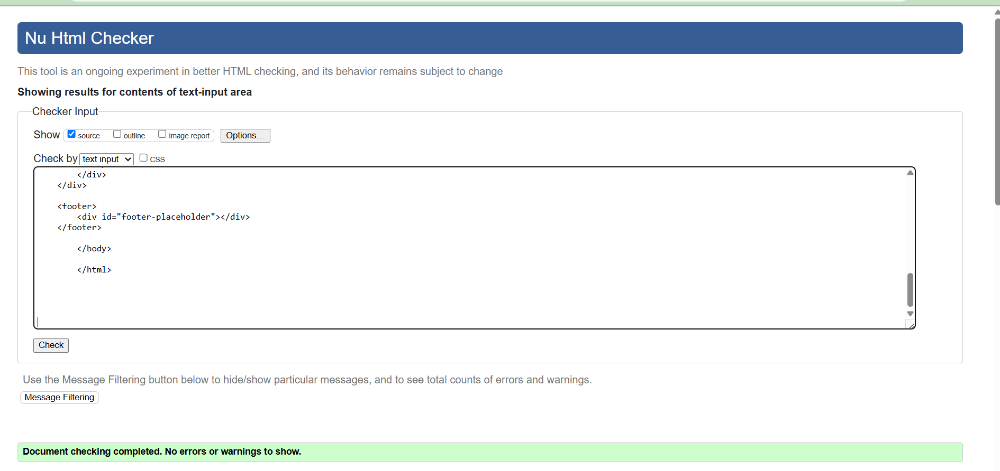
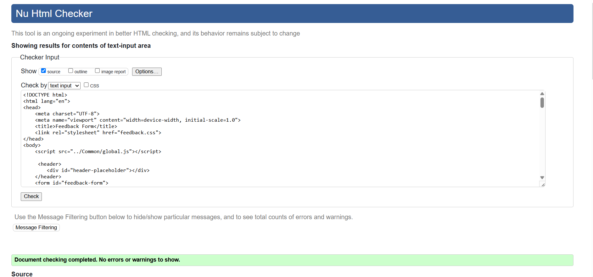

Team page validation report
The HTML validation report confirms that the document has no errors or warnings, ensuring W3C compliance.
The structure is well-formed, with correctly nested elements and proper semantic tags like <footer;, enhancing readability and accessibility.
No issues were found with the markup, ensuring a clean and error-free implementation.

Back to Page Editor page
Feedback Page validation report
The HTML validation report confirms that the feedback form page has no errors or warnings, ensuring W3C compliance. The document structure is correct, with proper meta tags for character encoding (UTF-8) and viewport settings for responsiveness. The <title; is appropriately set as "Feedback Form," and the external stylesheet (feedback.css) is correctly linked for styling. A script (global.js) is included for functionality, and semantic elements like <header; and <form; enhance readability and accessibility. The validation results indicate that the HTML is well-structured and free of issues.

Back to Page Editor page
Content Page validation report
The HTML validation report confirms that the student achievements page has no errors or warnings, ensuring W3C compliance. The document structure is well-formed, incorporating proper semantic elements like <section;, <div;, <h2;, <p;, and <img; with appropriate alt attributes for accessibility. The meta tags and external resources are correctly referenced, ensuring smooth functionality and styling. The content effectively highlights student success stories, using structured HTML to enhance readability and engagement. The validation results indicate that the HTML is free of issues, demonstrating adherence to best practices..